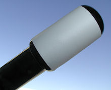
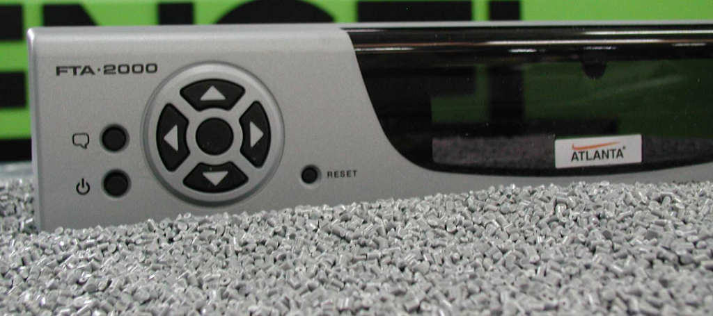
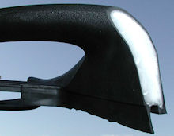
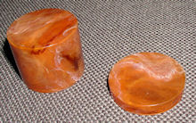

Queste tecniche permettono di integrare in un unico ciclo di lavoro lo stampaggio contemporaneo di materiali diversi, riducendo la necessità di lavorazioni successive come saldatura o assemblaggio. È la tecnologia con le maggiori potenzialità di crescita per prodotti complessi ed elaborati.

Multi-materiale / Bimateriale
Consente di combinare materiali rigidi (tecnopolimeri) e morbidi (elastomeri). Una classica applicazione è data da articoli con guarnizioni integrate o impugnature antiscivolo "soft-touch" (spazzolini, utensili da cucina, giraviti) per garantire ergonomicità e maneggevolezza.

Multi-colore
Permette di eliminare cicli di verniciatura o serigrafia. Viene impiegata per tastiere di computer o tasti di comando per auto, offrendo una resistenza all'usura nel tempo molto superiore rispetto ai metodi tradizionali, oltre a particolari effetti cromatici.

Co-iniezione o a Sandwich
Consiste nell'iniettare due materiali diversi tramite un unico canale. Questo permette di avere un nucleo interno (spesso in materiale riciclato o rinforzato) e uno strato superficiale estetico "nobile". Il processo avviene in tre fasi sequenziali che garantiscono la perfetta pulizia dell'ugello e finitura del pezzo.

Tartarugato o Marmorizzato
Variante dello stampaggio multi-colore in cui i materiali confluiscono alternativamente in un unico ugello miscelandosi in modo irregolare. Si ottengono effetti estetici sofisticati come il finto legno o il marmorizzato, regolando la velocità di iniezione e i cicli di intervallo.